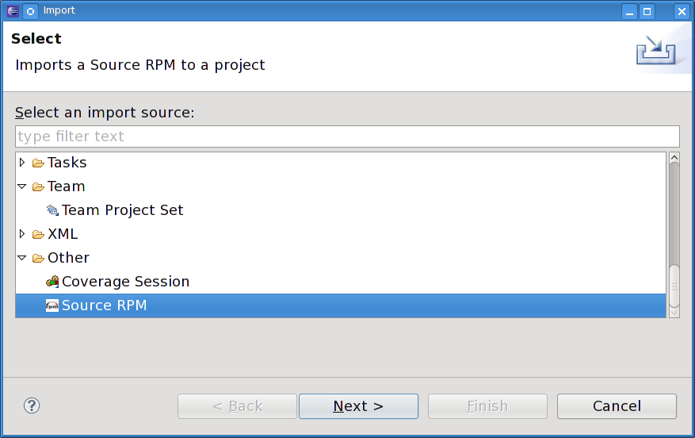

| Import src.rpm | ||
|---|---|---|
|
|
|
|
| General Usage | Createrepo | |
One of the features of the RPM plugin is the ability to import src.rpm files into an Eclipse project. A selection has been added to the screen that is displayed when the Eclipse File > Import > Other pulldown item is selected. This allows you to quickly and easily import source RPMs into the Eclipse development environment.
Invoking the SRPM Import feature of Eclipse is a very simple matter. At the top of the Eclipse click on File which causes a pulldown menu to appear. From this menu click on Import. This causes the screen below to appear:

From this screen select Source RPM and then Next to activate the next screen shown here:

There are three functions that this screen must perform in order to successfully import a source RPM into Eclipse. The first thing you must do is select a source RPM to be imported using the Browse button. It is used to browse around a system to the desired source RPM. Once the desired source RPM is found, either double-click on it or single-click and then click OK. The source RPMs name should now appear in the SRPM Name window.
Next, either select the already-existing project where this source RPM will be imported or click on the "Check out as a project using the New Project Wizard" button. If you select the latter, the New project wizard pops up and guides you through the process of creating a new project. Once the wizard is done, the import process begins automatically. If there is a project already created you want to import into, the Select a project window contains a list of the available Eclipse projects. Scroll to the desired project and select it so it is highlighted and click on "Finish".
Now you can use all of the resources of Eclipse on this imported project just as any other project. Notice that the source RPM that was selected for import has been copied into the project.
|
|

|
|
| General Usage | Createrepo |